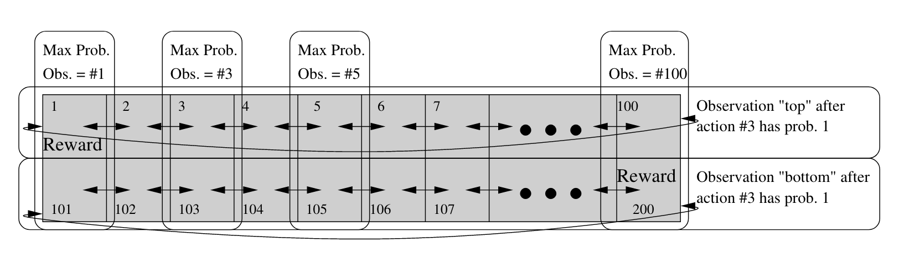
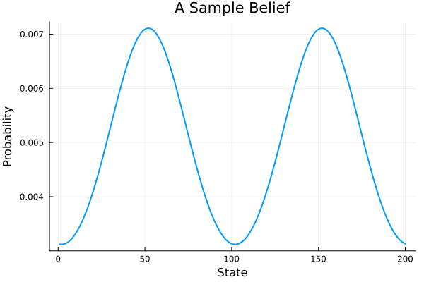

Circular Maze
Description
This environment is a generalization of the Circular Maze POMDP described in Finding Approximate POMDP solutions Through Belief Compression.[1] The world consists of n_corridor 1D circular corridors that each have corridor_length states. The robot spawns in a random corridor. It must determine which corridor its in, navigate to the proper goal state, and finally declare that it has finished.

<center> *Figure from Finding Approximate POMDP solutions Through Belief Compression. </center>
Action Space
Transitions left and right are noisy and non-deterministic. Transition probabilities are from a discrete von Mises distribution with unit concentration and mean at the target state.
| Num | Action | Description |
|---|---|---|
| 1 | CMAZE_LEFT | Move left with von Mises noise. |
| 2 | CMAZE_RIGHT | Move right with von Mises noise. |
| 3 | CMAZE_SENSE_CORRIDOR | Observe the current corridor. |
| 4 | CMAZE_DECLARE_GOAL | Ends the episode. Receive r_findgoal if at the goal. |
State Space
The (ordered) state space is an array of all CircularMazeStates and a terminalstate: [CircularMaze(1, 1), ..., CircularMaze(n_corridors, corridor_length), TerminalState()].
Observation Space
The observation space is the union of the state space and 1:n_corridors. If the robot picks CMAZE_SENSE_CORRIDOR, they observe the index of the current corridor. Otherwise, they observe their current state with von Mises noise.
Rewards
The goal is to navigate to the correct goal state for the given corridor and then to declare the goal once arrived. If the robot correctly declares the goal, it receives r_findgoal. It incurs a r_timestep_penalty for every timestep it does not reach the goal. By default r_findgoal is 1 and r_timestep_penalty is 0.
Starting State
The initial state is sampled from a repeated, discrete von Mises distribution each with a concentration at the center of the hallway.

Episode End
The episode terminates once the robot declares the goal CMAZE_DECLARE_GOAL regardless of whether the robot is correct.
Documentation
CompressedBeliefMDPs.CircularMaze — TypeCircularMaze(n_corridors::Integer, corridor_length::Integer, discount::Float64, r_findgoal::Float64, r_timestep_penalty::Float64)
CircularMaze(n_corridors::Integer, corridor_length::Integer; kwargs...)
CircularMaze()A POMDP representing a circular maze environment.
Fields
n_corridors::Integer: Number of corridors in the circular maze.corridor_length::Integer: Length of each corridor.probabilities::AbstractArray: Probability masses for creating von Mises distributions.center::Integer: The central position in the maze.discount::Float64: Discount factor for future rewards.r_findgoal::Float64: Reward for finding the goal.r_timestep_penalty::Float64: Penalty for each timestep taken.states::AbstractArray: Array of all possible states in the maze.goals::AbstractArray: Array of goal states in the maze.
Example
using CompressedBeliefMDPs
n_corridors = 8
corridor_length = 25
maze = CircularMaze(n_corridors, corridor_length)CompressedBeliefMDPs.CircularMazeState — TypeCircularMazeState(corridor::Integer, x::Integer)The CircularMazeState struct represents the state of an agent in a circular maze.
Fields
corridor::Integer: The corridor number. The value ranges from 1 ton_corridors.x::Integer: The position of the state within the corridor. The value ranges from 1 to thecorridor_length.
- 1Roy doesn't actually name his toy environment. For the original environment details, see the "PCA Performance" subsection on page 8.